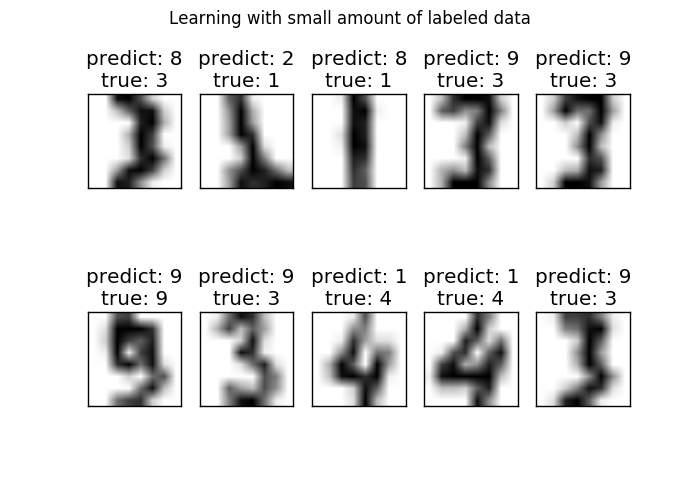

Label Propagation digits: Demonstrating performance¶
This example demonstrates the power of semisupervised learning by training a Label Spreading model to classify handwritten digits with sets of very few labels.
The handwritten digit dataset has 1797 total points. The model will be trained using all points, but only 30 will be labeled. Results in the form of a confusion matrix and a series of metrics over each class will be very good.
At the end, the top 10 most uncertain predictions will be shown.
Script output:
Label Spreading model: 30 labeled & 300 unlabeled points (330 total)
precision recall f1-score support
0 1.00 1.00 1.00 23
1 0.58 0.54 0.56 28
2 0.96 0.93 0.95 29
3 0.00 0.00 0.00 28
4 0.91 0.80 0.85 25
5 0.96 0.79 0.87 33
6 0.97 0.97 0.97 36
7 0.89 1.00 0.94 34
8 0.48 0.83 0.61 29
9 0.54 0.77 0.64 35
avg / total 0.73 0.77 0.74 300
Confusion matrix
[[23 0 0 0 0 0 0 0 0]
[ 0 15 1 0 0 1 0 11 0]
[ 0 0 27 0 0 0 2 0 0]
[ 0 5 0 20 0 0 0 0 0]
[ 0 0 0 0 26 0 0 1 6]
[ 0 1 0 0 0 35 0 0 0]
[ 0 0 0 0 0 0 34 0 0]
[ 0 5 0 0 0 0 0 24 0]
[ 0 0 0 2 1 0 2 3 27]]
Python source code: plot_label_propagation_digits.py
print(__doc__)
# Authors: Clay Woolam <clay@woolam.org>
# Licence: BSD
import numpy as np
import matplotlib.pyplot as plt
from scipy import stats
from sklearn import datasets
from sklearn.semi_supervised import label_propagation
from sklearn.metrics import confusion_matrix, classification_report
digits = datasets.load_digits()
rng = np.random.RandomState(0)
indices = np.arange(len(digits.data))
rng.shuffle(indices)
X = digits.data[indices[:330]]
y = digits.target[indices[:330]]
images = digits.images[indices[:330]]
n_total_samples = len(y)
n_labeled_points = 30
indices = np.arange(n_total_samples)
unlabeled_set = indices[n_labeled_points:]
# shuffle everything around
y_train = np.copy(y)
y_train[unlabeled_set] = -1
###############################################################################
# Learn with LabelSpreading
lp_model = label_propagation.LabelSpreading(gamma=0.25, max_iter=5)
lp_model.fit(X, y_train)
predicted_labels = lp_model.transduction_[unlabeled_set]
true_labels = y[unlabeled_set]
cm = confusion_matrix(true_labels, predicted_labels, labels=lp_model.classes_)
print("Label Spreading model: %d labeled & %d unlabeled points (%d total)" %
(n_labeled_points, n_total_samples - n_labeled_points, n_total_samples))
print(classification_report(true_labels, predicted_labels))
print("Confusion matrix")
print(cm)
# calculate uncertainty values for each transduced distribution
pred_entropies = stats.distributions.entropy(lp_model.label_distributions_.T)
# pick the top 10 most uncertain labels
uncertainty_index = np.argsort(pred_entropies)[-10:]
###############################################################################
# plot
f = plt.figure(figsize=(7, 5))
for index, image_index in enumerate(uncertainty_index):
image = images[image_index]
sub = f.add_subplot(2, 5, index + 1)
sub.imshow(image, cmap=plt.cm.gray_r)
plt.xticks([])
plt.yticks([])
sub.set_title('predict: %i\ntrue: %i' % (
lp_model.transduction_[image_index], y[image_index]))
f.suptitle('Learning with small amount of labeled data')
plt.show()
Total running time of the example: 1.04 seconds ( 0 minutes 1.04 seconds)